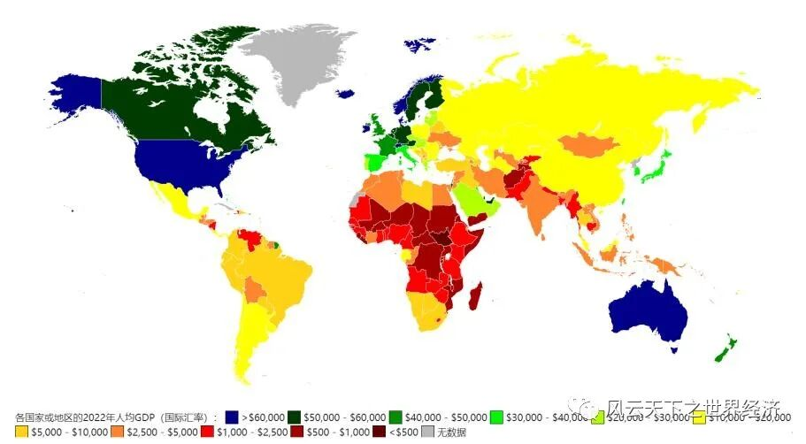
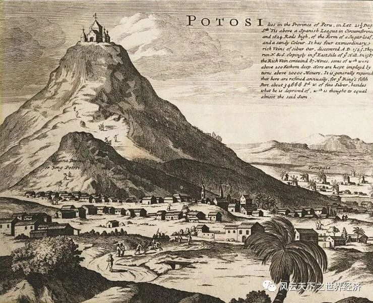
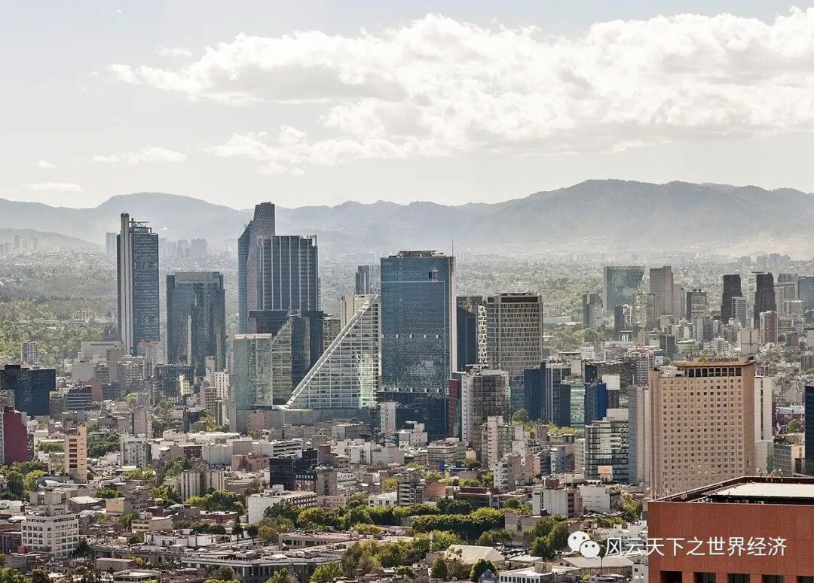

“地球的富有造成人类的贫困”，“发展是遇难者多于航行者的航行”，《拉丁美洲切开的血管》的卷首语振聋发聩。
拉丁美洲，一片有肥沃的土地、温和的气候、广阔的平原、以及现代工业所需的丰富矿产资源的土地，在“上帝的恩赐”下却陷入贫富差距、毒品暴力、过度城市化与产业空心化的泥淖。回望整个20世纪和21世纪，除去寥寥几国外（甚至难以定义为这些国家取得了“成功”），拉丁美洲和非洲庞大的独立发展中国家群体像是被名为“发展”的列车抛在身后，为其加煤添油，却享受不到在车上飞驰的红利。
时至今日，“拉丁美洲们”切开的血管仍在汩汩流血。农产品与大宗商品出口比例过高的贸易结构，使拉美与非洲土地上的后发国家们成为“依附性经济体”，像矿井中的金丝雀，在每一轮经济衰退周期中最先奄奄一息。后发国家的发展之路真的被堵死了吗？美欧日发达国家在前，垄断核心技术；南亚东南亚发展中国家在侧，排出“雁行模式”，如同“产业转移的黑洞”。在缺乏干预的情况下，拉美与非洲走向工业慢性死亡似乎是必然的结局。从拉丁美洲讲起，经济史的脉络是如此清晰而残忍，流淌着不能言语的国家的血泪。

2022年世界人均GDP分布图
“黄金、铜、铁、棉花、咖啡的诅咒”
19世纪上半叶，大批拉美国家宣布独立，殖民掠夺史的终结，却是另一部血泪史的开端。英国“自由贸易”的口号是商品倾销外包裹着的糖衣，曾经的殖民者露出虚伪笑脸，包办了拉美从衣食住行、基础设施再到奢侈享受的一切需求，使刚出现的本地纺织、冶金工业消亡的如此名正言顺，建立工业体系的企望在独立之初已化成泡影。阿根廷出口皮革和熏肉制品，智利出口铜矿，巴西出口咖啡和黄金，玻利维亚和墨西哥出口巨量的白银，这些实打实的血肉滋养了进口国强韧的工业体系，庞大的国内市场被外国工业资本打着“自由贸易”旗号瓜分，换来的却是锅碗瓢盆、衣物与庄园主专供的奢侈品……利润尚未成为资本，就已在蒙昧中被消耗殆尽，大庄园主与议员们在原材料和农产品出口中累积了大量的财富，对整个国家的生灵凋敝视若罔闻。比较优势理论造就了“资源诅咒”，而贸易自由化使这里成为资本倾销的热土，“贫困化增长”的困境在这片土地呈现的淋漓尽致。

1715年的玻利维亚波托西银矿
拉美的“资源诅咒”表现在何处？凭借自身资源比较优势，按部就班发展农业与能源产业似乎是最稳妥的路径。文莱凭借油气资源致富，在东南亚人均GDP仅次于新加坡，科威特、卡塔尔、阿联酋等中东波斯湾诸国的富庶更是闻名全球，即使黑金之财不可持续，仍可为基础设施建设和产业转型奠定基础，也实现了人均GDP的跨越。拉美诸国为什么不能安于自身在自然资源与农业种植方面的比较优势，专注于通过发展农业和出口原材料，以及相应的加工产业实现国民富裕呢？
就目前来看，单一产业支柱只适合于小国寡民，而当产业支柱是资本密集型产业时，经济发展只是少数食利阶层的狂欢。文莱人口40余万，科威特人口约400万，卡塔尔人口约300万，而巴西有约2亿人口，墨西哥有约1.3亿人口，阿根廷人口约5000万，相比于那些人口稀少的亚洲资源国，单一产业无法养活拉美诸国庞大的待就业人口，复杂的产业结构才能蕴养活水。巴西80%以上的土地掌握在大庄园主手中，而美欧等国是矿产开发公司的大股东，食利阶层的出路并不是民众的出路。
“机器上飘着什么旗？”
恶性循环的泥潭之中，拉丁美洲曾经挣扎。
20世纪上半叶，在受到大萧条带来的出口收缩潮冲击之后，拉丁美洲认为初级出口品贸易条件的恶化是长期的，初级产品出口为核心的发展模式不可持续。在凯恩斯主义、发展经济学等理论流行的背景下，劳尔·普雷维什在《拉美的经济发展及其主要问题》中提出了“中心-外围理论”，指出在传统的国际分工下，世界被分为两个部分：大的工业中心及为大的工业中心提供原料和食品的外围。以工业品生产和出口的中心国家和以初级产品生产和出口的外围国家，其在贸易中获得的利益是不均等的。在这样的理论指导下，拉丁美洲采用了内向型发展模式，走上进口替代的道路。
墨西哥、巴西、阿根廷、智利等拉美强国走在进口替代的一线，构建了从日用消费品轻工业到钢铁、石油产业的工业体系。巴西至今仍然发达的航空业就是这一时期的孑遗，19世纪40年代起，巴西建立起航空科研教育机构CTA、联邦航空技术中心IPD，大力进行科研投入，完成包括航空科学、信息技术、微电子及航天科学探索等先进领域的多项科研成就，并研发制造新机型。时至今日，巴西航空业仍在创造大量就业岗位，巴西航空公司是全球支线航空市场的龙头企业。
巴西航空工业公司ERJ系列喷气式支线客机
但是，背离了比较优势的进口替代真的是摆脱依附的灵丹妙药吗？拉丁美洲进口替代繁荣的背后，对外资和国外技术与生产线的需求与日俱增。跨国企业的手段由光明正大的商品倾销转为以合资入股、兼并收购为手段的资本输出，方兴未艾的民族工业头顶仍有隐秘的天花板，“隐形的控制”从未消解。过度的贸易保护消除国内企业提高生产效率、改进产品质量的动力，如同温水煮青蛙，拉丁美洲民族工业未能像日韩一样由进口替代及时转向出口导向，没能在20世纪下半叶的全球分工产业链中争得一席之地，却在资本输入过程中成为跨国公司的本地附庸。
挣扎的努力宣告失败，下降的通路打开。外债债台高筑，进口依赖尚未消解，出口竞争力也被扼杀在摇篮，拉丁美洲想要籍“进口替代”实现独立自主的目标没有实现，却耗尽了自由贸易时期放血剜肉换来的资本积累，换来沉重的外债贷款与愈演愈烈的通货膨胀，终于，债务危机引爆了层层风险，拉丁美洲迎来“失去的十年”。
“比较优势的尽头是哪里？”
80年代的拉美债务危机宣告了进口替代战略的最终落寞，此后拉美诸国在“华盛顿共识”的引导下，采用以贸易自由化、国有企业私有化、经济体制市场化等为主要特征的新自由主义，替代了积弊已久的进口替代战略，从内向型发展转向外向型发展。在新自由主义战略指导下，拉丁美洲似乎有了重新喘息之机，GDP增长率缓慢恢复，通货膨胀也得到一定程度的遏制，经济逐步恢复到债务危机前水平。

现代墨西哥城
拉丁美洲正在变得更好吗？
70年代是拉美诸国的高光期，1979年，巴西人均GDP为1901美元，阿根廷人均GDP为2501美元，同时期的韩国人均GDP为1773美元，新加坡人均GDP为3899美元，中国人均GDP仅为195美元。但在“东亚四小龙”飞速成长的黄金时期，拉美诸国陷入发展停滞的泥潭，经济增长乏力，2019年，韩国人均GDP达3.17万美元，新加坡人均GDP达6.58万美元，而同期的巴西人均GDP为8845美元，阿根廷人均GDP为9963美元。
疫情后，拉美经济更是每况愈下，在脆弱的世界经济大环境下，高杠杆高通胀困境再次重演。
拉美诸国从进口替代战略走向新自由主义的过程中，出现了制造业空心化、过度城市化、“福利赶超”等现象，导致经济后续增长乏力，由此导致的社会阶层分化、收入不平等、暴力犯罪频发、枪支毒品泛滥、政变频仍等问题加大了经济发展难度。
新自由主义的经济模式下，拉丁美洲的制造业再次受到致命打击，积弱的国有企业和民族工业无法抵抗外国产品与资本的冲击，大量国企被私有化，许多重要产业重新被跨国公司垄断，拉美诸国的产业结构呈现出“去工业化”态势。农业产业链的状况也不容乐观，孟山都公司（2018年被拜耳收购）一度凭借转基因大豆垄断整个阿根廷的大豆育种市场，跨国农业公司与拉美的农产品出口也有千丝万缕的联系，肥沃的土地之上，本国农民的利益却被压缩到最低。
菲律宾，一个由反孟山都的农民和志愿者设计的麦田怪圈
拉美以原材料出口为支柱产业的发展模式注定会拉大贫富差距，在工业发展乏力的背景下，政府选择通过高福利手段缓解社会矛盾，过高的国家财政福利支出挤占了教育、基建等方面的投资，却难以改善底层人民的生活，更进一步削减了经济发展的潜力。代表性国家如从高收入国家回落到中等收入国家的阿根廷，福利支出一旦提高，就难以回落到正常水平，“饮鸩止渴”的福利模式还能持续多久？尚未可知。
2014年阿根廷再次债务违约，走上街头抗议的群众
拉丁美洲各国的未来将走向何方？目前看来，在丧失比较优势的背景下，拉丁美洲以农矿原材料出口为主的外向型发展模式仍将持续，近年来，随着世界经济发展陷入停滞，拉丁美洲多国都出现了人均GDP增长的停滞甚至倒退。伴随着地缘政治对抗的兴起，美墨制造业“友岸外包”或许能为拉美制造业带来新机遇。
未来仍有层层迷雾，“拉丁美洲切开的血管”何日愈合？历史给不出答案。